第十二章 数据可视化
第十一章的回归、聚类和其他统计分析，最后都会面对一个共同问题：怎样把模型、表格和数值结果变成读者能够检查、理解并据以判断的证据？数据可视化并不是为研究报告“配一张图”，而是用位置、长度、形状、颜色和文字标注组织证据，使趋势、差异、分布、异常与不确定性可以被看见。
因此，制图不应从“哪一种图好看”开始，而应沿着一条清晰的决策链推进：先确认研究问题和数据结构，再选择与比较任务相配的图形，随后通过排序、尺度、标注和配色降低误读风险，最后把图放入一段可检验的研究叙事。 本章也介绍 Excel、网络制图工具、R 与 AI 辅助绘图，但软件只是实现这条决策链的工具；如果问题、变量和判断标准没有想清楚，再方便的工具也只能更快地产生不合适的图。
12.1 为什么统计表不能代替图形
相同的统计量，可能隐藏完全不同的结构
均值、标准差、相关系数和回归线能压缩大量数据，因而十分重要；但压缩也会掩盖结构。Anscombe 在 1973 年提出的“四重奏”是一个经典提醒：四组二维数据的均值、标准差、相关系数与同一条线性回归线几乎相同，但散点图的形态并不相同。
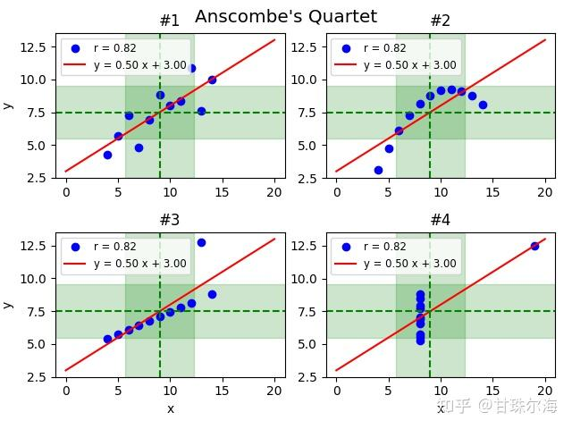
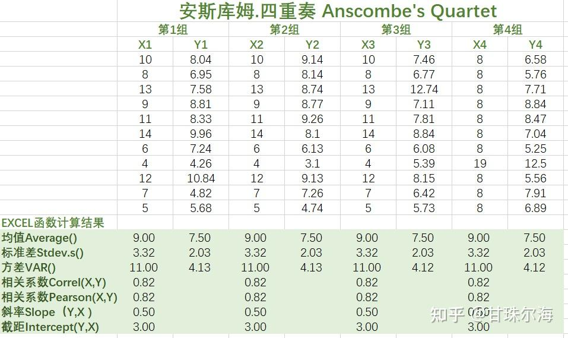
这张图至少带来三项操作要求。第一，计算相关或回归前先画散点图，检查关系是否近似线性。第二，看到显著的相关或回归系数后，回到图中确认是否由少数异常值或高杠杆点驱动。第三，数据结构若呈弯曲、分组或异方差，不能仅因线性模型给出一个 p 值就停止诊断。换言之，图形是统计分析的起点和复核工具，而不是装饰性的终点。
Datasaurus Dozen 把这一思想推进得更直观：许多数据集可以有相近的 x、y 均值、标准差和相关系数，但其点云可以组成恐龙、靶心、圆环、斜线、星形或条纹等完全不同的轮廓。
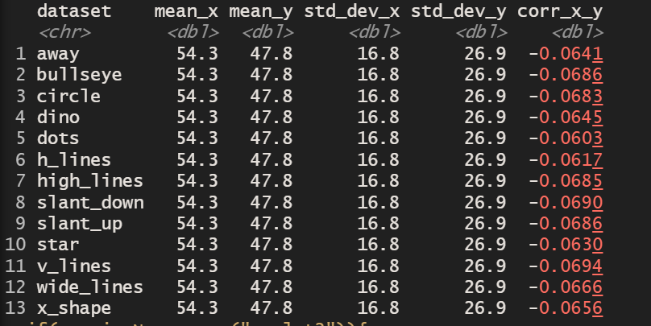
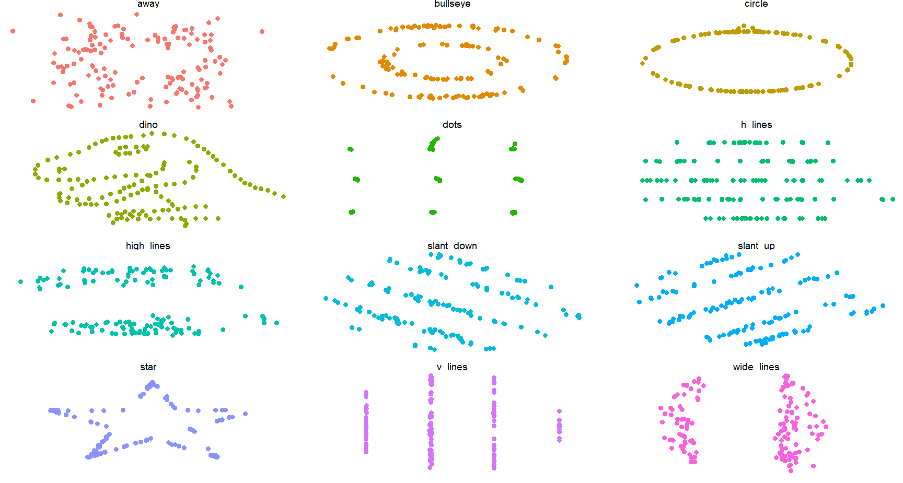
可视化首先服务于发现，也服务于沟通
在研究过程中，图形有两种互相衔接的用途。探索性可视化帮助研究者发现缺失值、录入错误、异常个案、类别不均衡和可能的关系形态；它可以保留较多细节。解释性可视化则服务于读者，把一项已经核实的发现组织成一幅能被准确阅读的图；它需要删去干扰、给出明确图题和必要图注。两者不是对立的：先用探索图发现问题，再用解释图报告证据，才能避免为了“漂亮”而过早隐藏重要信息。
| 先问什么 | 常见数据结构 | 图形首先要完成的任务 | 可优先考虑的图形 |
|---|---|---|---|
| 哪些类别更多或更少？ | 一个类别变量与一个数值 | 精确比较大小、排序与差距 | 横向条形图、点图、棒棒糖图 |
| 某指标怎样随时间变化？ | 有明确顺序的时间与一个或多个数值 | 显示方向、转折与波动 | 折线图；点较少时保留标记 |
| 变量取值集中在哪里，组间怎样不同？ | 一个或多个连续变量 | 显示中心、离散、偏态和异常 | 直方图、密度图、箱线图、原始点图 |
| 两个连续变量如何共同变化？ | 两个数值变量，可能带分组 | 显示形态、离群与分组差异 | 散点图、分面散点图、二维密度图 |
| 整体由哪些部分构成？ | 少量互斥类别和比例 | 显示部分与整体，同时保留可比较性 | 排序条形图、100% 堆叠条形图；少量类别时饼图 |
| 是否存在层级或流向？ | 层级、来源—去向或网络关系 | 显示嵌套、路径或连接 | 树图、桑基图、网络图；须先确认读者是否需要精确比较 |
表中列出的是起点而非自动处方。例如，时间变量只有两个时间点时，成对点图往往比折线图更诚实；如果类别很多，横向条形图比竖向条形图更能容纳完整名称；若研究的核心是个体差异，就不宜仅报告一根平均柱。图形选择的关键是让读者完成真正需要的比较。
12.2 从数据结构到图形：先选任务，后选样式
以问题和变量类型建立第一轮筛选
“From Data to Viz”的决策树把图形选择组织为一系列问题：数据主要是数值、类别、时间、空间还是网络？变量之间是比较、分布、相关、构成、演变还是流动？这一思路比背诵图形名称可靠，因为它先要求研究者明确数据的结构和读者的阅读任务。
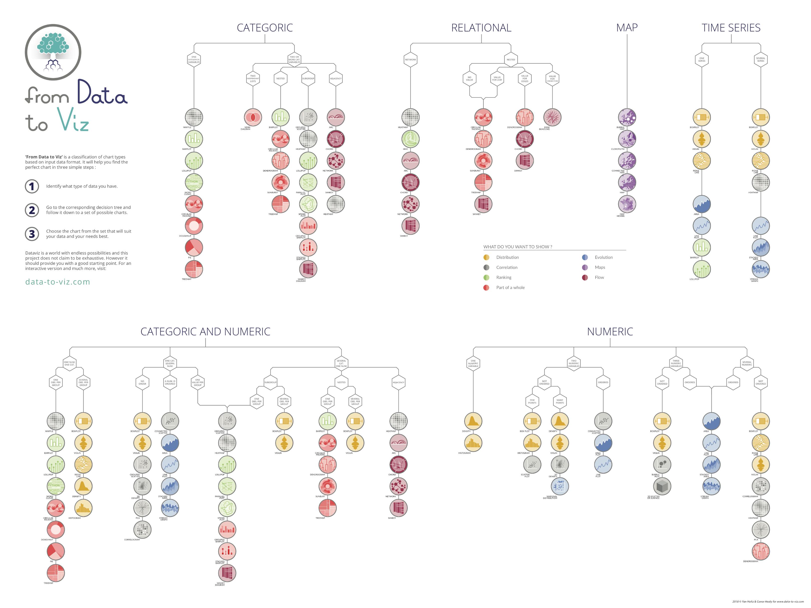
下面以“多个国家的出口额”为例。左侧是长度编码的横向条形图，右侧是棒棒糖图；两者都按数值由大到小排列，因此都让最大值与其余国家之间的巨大差距变得明显。
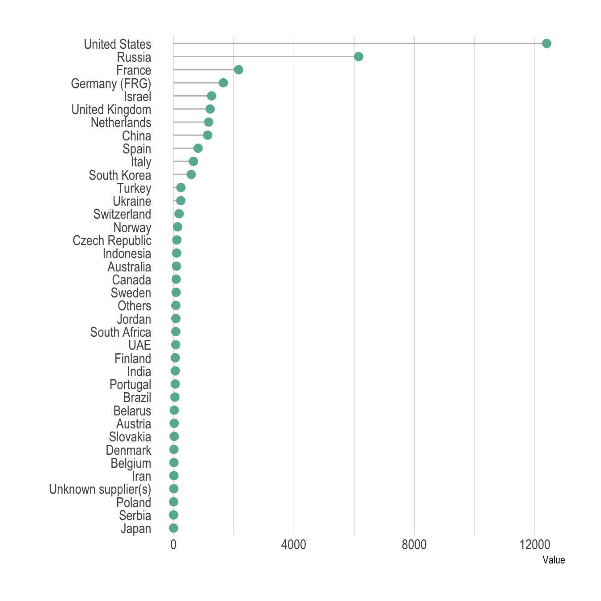
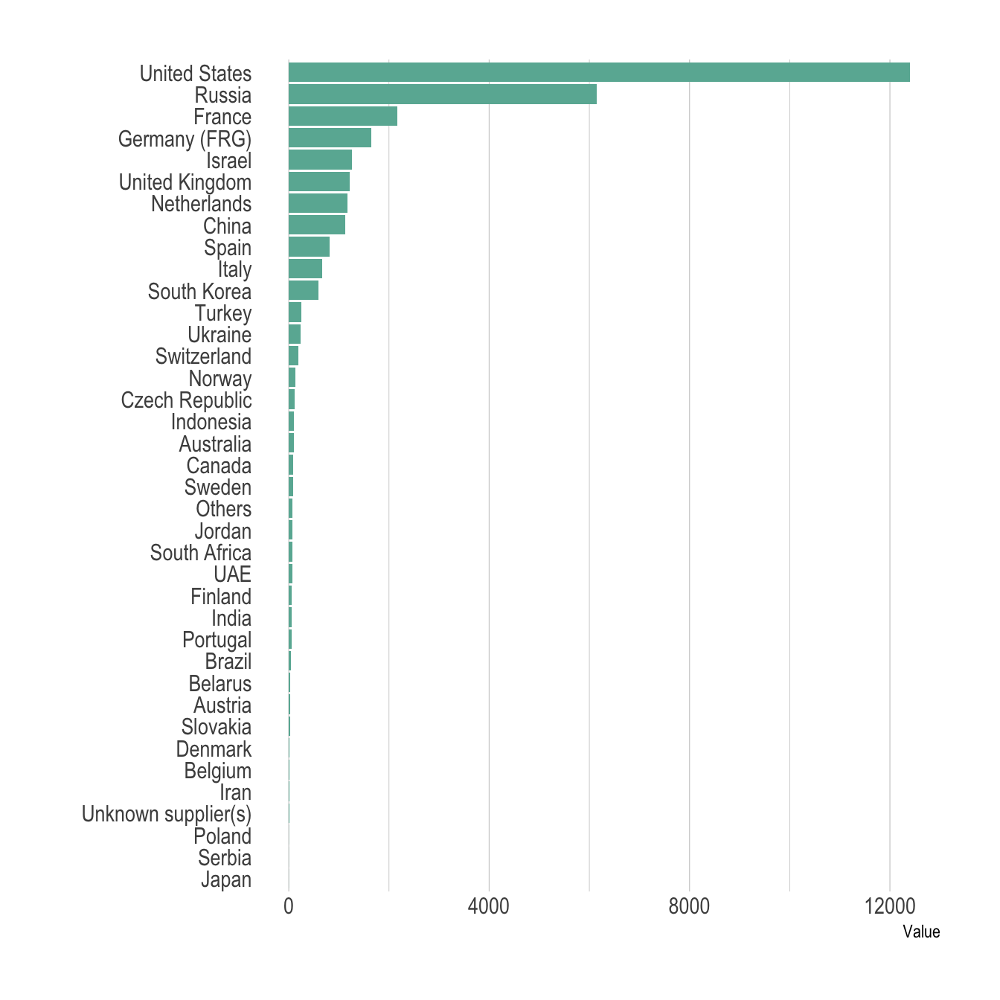
同一份类别数据也可以画成树图、圆形条形图或圆形打包图。它们用矩形面积、圆周方向或圆面积来表达量，并能产生强烈的整体视觉效果；代价是人眼不擅长精确比较面积和弧长，标签也容易拥挤。因此，只有当研究重点是层级或整体结构、而不是比较相邻类别的微小差异时，才应优先选择这些形式。

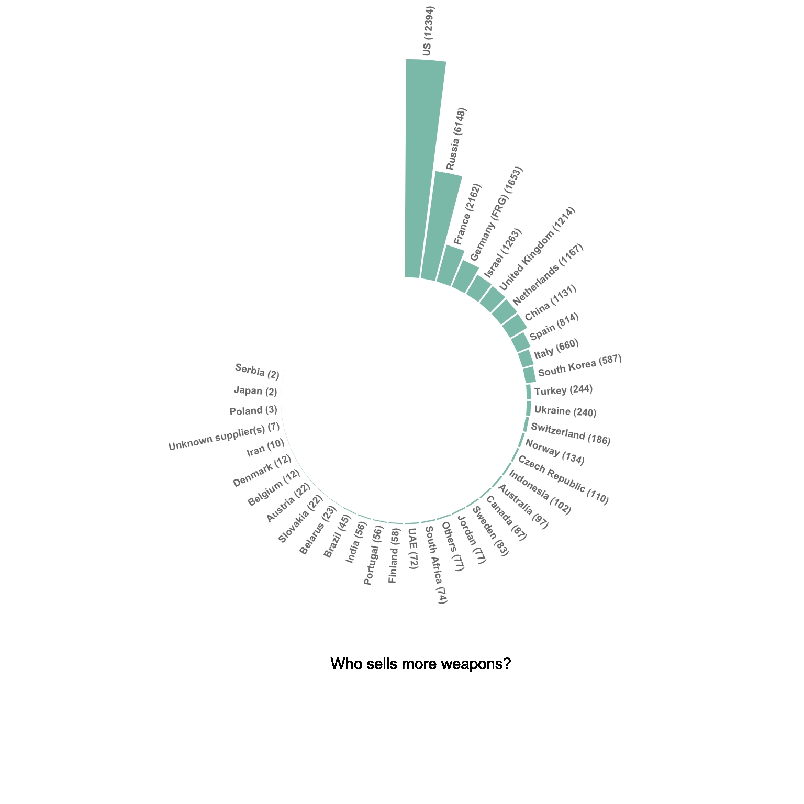
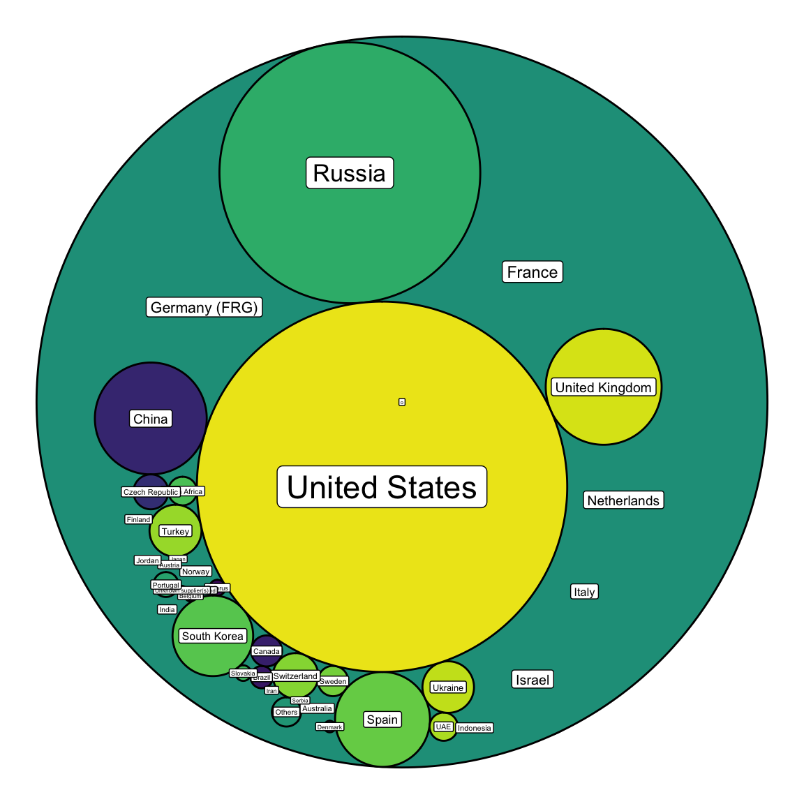
排序、强调与留白：让读者先看见最重要的信息
类别图的默认顺序常来自字母、编码或数据表的原始行次，但这样的顺序通常没有分析意义。除非类别本来具有自然顺序，例如年级、年龄段或时间，比较大小时应按数值排序。左图按字母排列，读者必须反复寻找并在不同位置之间比较；右图按数值排列，最大值、长尾和相近值立即可见。
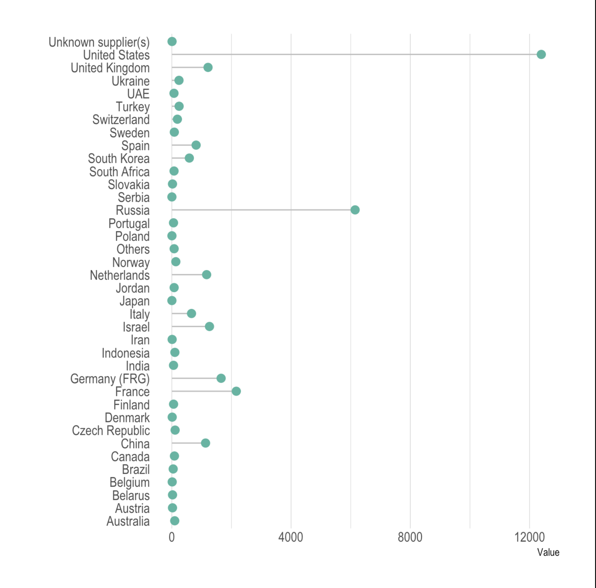
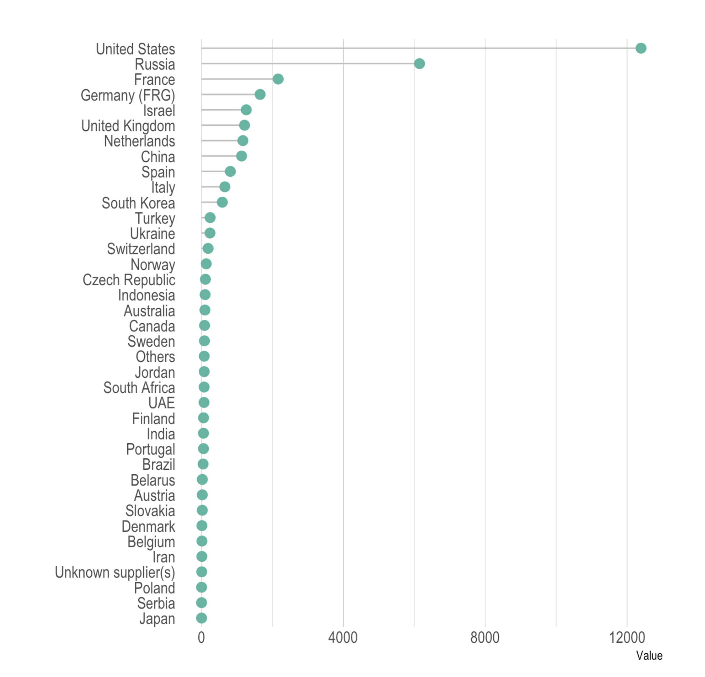
当一张图包含许多系列时，所有线条都使用饱和颜色会形成“意大利面图”：读者能看见很多信息，却找不到要读什么。更好的做法是先确定叙事对象，再把背景系列退为浅灰，用一种高对比色和直接注释突出目标对象。
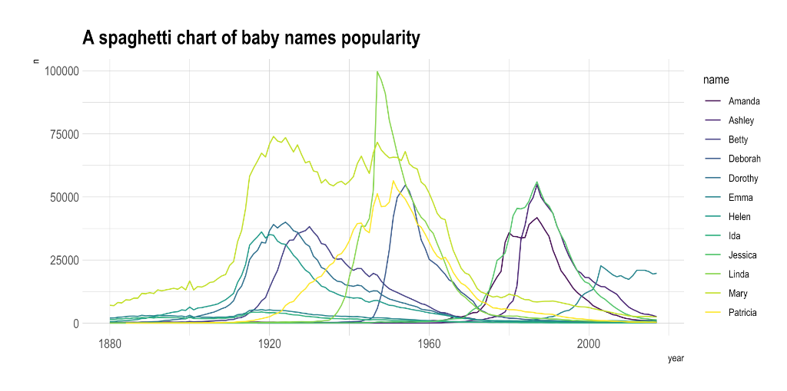
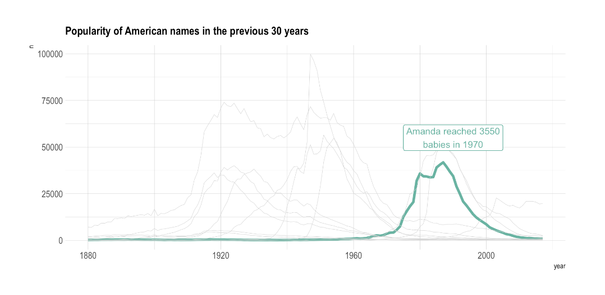
面积和角度不利于精确比较
饼图在类别很少、差异明显、重点是“各部分合为整体”时可以使用；但一旦类别多或比例接近，读者就不得不比较角度与扇形面积，这比比较同一基线上的长度困难得多。下图的三组例子中，扇形图很难判断 18%、19%、21% 等相近比例的先后，而相同数值以条形图呈现后，排序与差距十分明确。
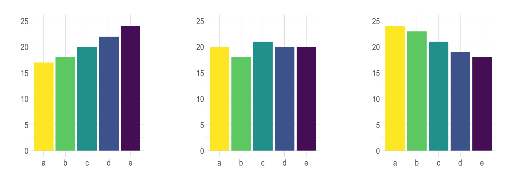
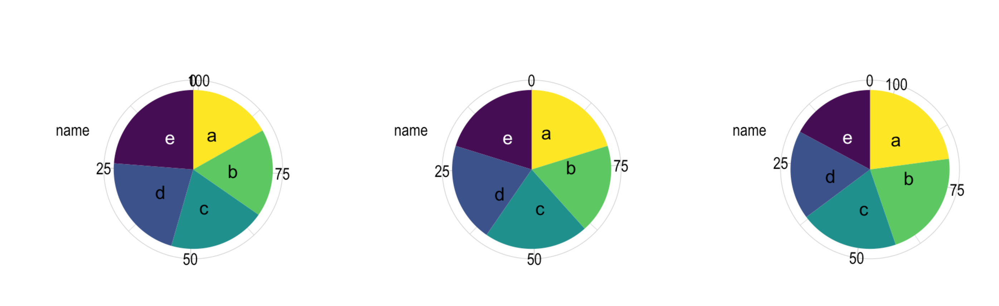
摘要图不应遮蔽样本量与数据形态
箱线图很适合快速比较中位数、四分位距、异常值和组间位置差异，但它把大量个体观测压缩成少数统计量。若各组样本量差别很大、分布多峰或某组样本很少，仅看箱体的高低会得出过度确定的印象。对小到中等样本，可在箱线图上叠加抖动后的原始点；对较大样本，可结合小提琴图或密度图，并同时标注样本量。
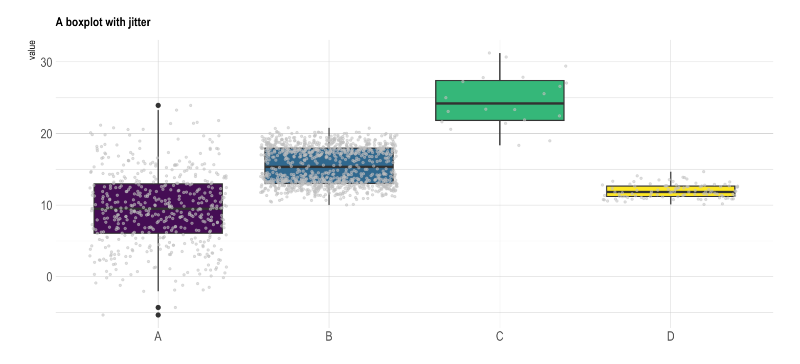
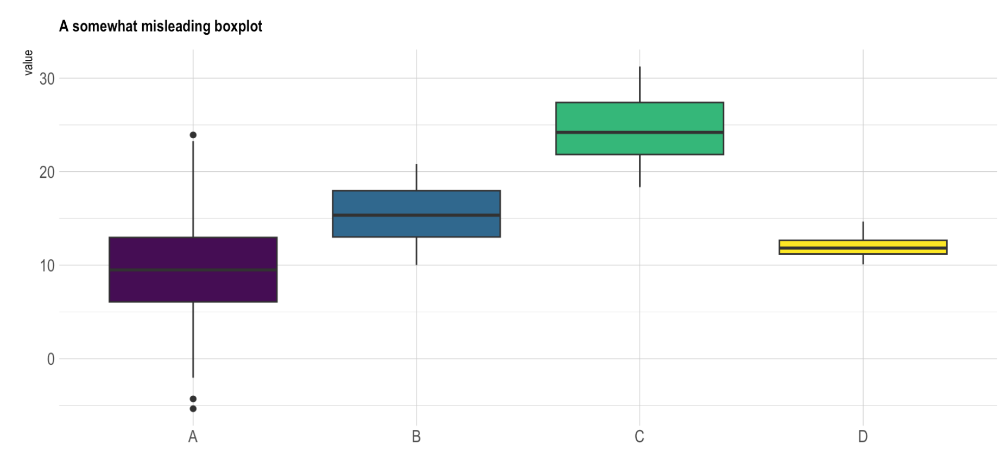
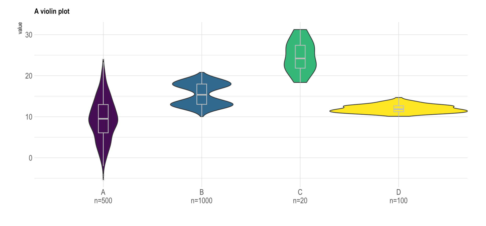
12.3 常见图形：让编码方式匹配比较任务
条形图、折线图与散点图
条形图以长度表示类别大小，适用于类别比较。为避免视觉夸大，普通条形图的数值轴通常应从零开始；如果因极小差异需要截断轴，必须明确标示并说明目的，且不宜把截断图用于制造戏剧性的差距。类别名称较长或类别较多时，横向条形图更易阅读。
折线图适合横轴具有连续或自然顺序、并且线段本身有意义的情形，例如按月、按年或按测量轮次的变化。若每一个离散观测点同样重要，可在折线上保留点；若点非常密集，标记会遮挡趋势。把没有顺序的类别硬连成线，会错误暗示“中间过程”。
散点图将每一个观察对象放在两个数值坐标上，是检查相关、回归和聚类前提的基础。它可以显示线性或非线性趋势、离群点、分组、范围受限与异方差。点太多而重叠时，可使用透明度、抖动、二维密度或分面，不能用加深颜色把重叠问题藏起来。
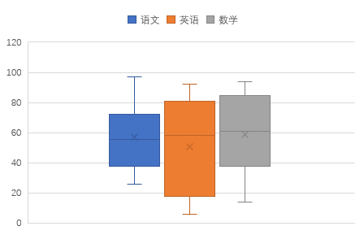
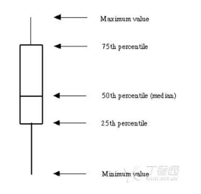
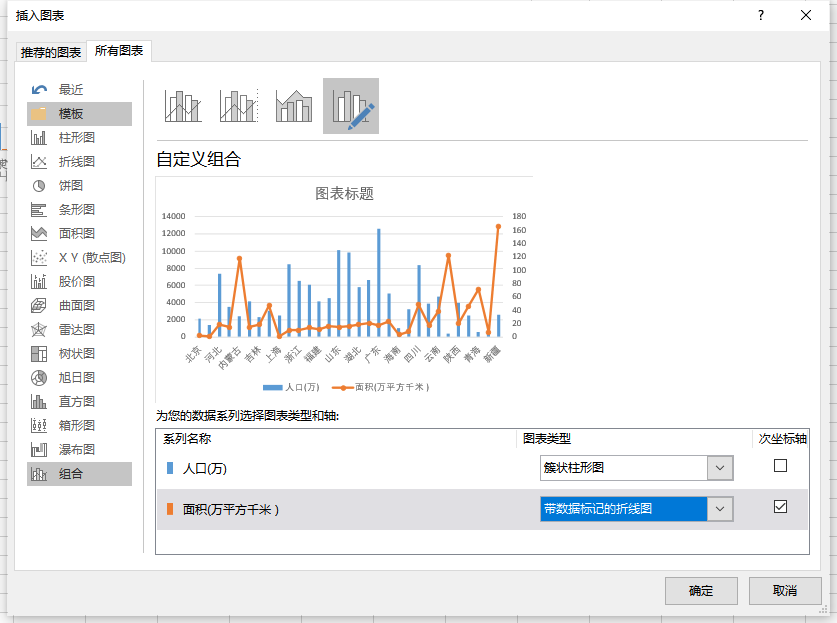
气泡图与双坐标图：信息增多，不等于解释更强
气泡图是在散点图的 x、y 两个数值之外，用气泡面积编码第三个数值。它能在一张图中放入更多信息，但人眼很难精确比较面积，而且大气泡会遮住小气泡。若使用气泡图，应保证面积而非直径与数值对应，提供清楚的尺寸图例，并检查透明度和重叠；若第三个变量是类别，颜色或分面通常比气泡尺寸更合适。
双坐标图将两组量纲不同、数值范围相差很大的数据放在左右两个纵轴上。Excel 的组合图可以方便地创建这种形式，但“能放在一起”不表示“二者有关系”：只要改变右轴范围，线条和柱形就能看起来更同步或更背离。双坐标图只适合两序列在同一横轴上确有必要同时阅读、并且两条轴都被清晰标注的场景；若要比较趋势，应优先标准化为共同指数、改画两个并列图，或明确说明不比较绝对高度。
镜像条形图：以对称尺度比较两组结构
人口金字塔或镜像条形图把两组类别值分别置于零点左右，以相同绝对刻度比较结构。例如，可比较男女在各年龄段的人数，或比较城乡学生在不同学段的样本数。其关键条件是左右两侧采用对称的范围和单位；若为了让一侧“显得更大”而使用不同尺度，镜像结构就失去比较意义。
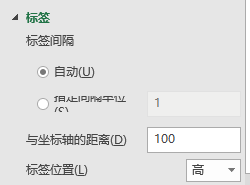
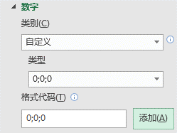
| 图形 | 最适合回答的问题 | 应优先检查什么 | 常见误读或替代方案 |
|---|---|---|---|
| 条形图 | 各类别相差多少 | 是否按有意义顺序排列；基线是否合理 | 截断纵轴夸大差异；类别过多时改横向条形或筛选重点 |
| 折线图 | 指标是否随有序时间或过程改变 | 横轴是否真有顺序；时间间隔是否一致 | 把无序类别连线；多条线拥挤时突出少数或分面 |
| 散点图 | 两个数值变量的关系是什么形状 | 离群、高杠杆、重叠、分组和非线性 | 把趋势当因果；点太密时使用透明度或二维密度 |
| 气泡图 | 三个数值变量是否形成可读的格局 | 面积映射、重叠和尺寸图例 | 按直径而非面积编码；让大气泡遮住小气泡 |
| 箱线图 | 多组分布的位置和离散怎样不同 | 样本量、异常值规则、原始分布 | 忽略小样本或多峰；叠加原始点或标注 n |
| 饼图 | 少量类别的构成是否直观 | 类别是否互斥且总和有意义 | 比较相近扇形；改为排序条形图 |
| 双坐标图 | 两个量纲不同的序列需要同屏参照吗 | 两轴单位、范围和读者任务 | 视觉上暗示相关；改用标准化趋势或并列小图 |
12.4 从默认图表到可读图表
图表元素不是装饰，而是解释的一部分
图表标题、坐标轴标题、单位、图例、数据标签、网格线和数据来源共同构成读者的解释路径。Excel 的“图表元素”面板和“设置坐标轴格式”面板把这些元素集中在一起：前者可以添加或删除标题、轴标题、图例和数据标签，后者可以设定最小值、最大值、主刻度与轴交叉位置。
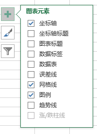
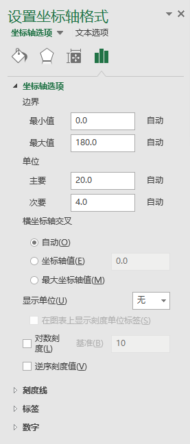
数据标签并非越多越好。左图中的气泡以颜色和大小编码多个变量，但读者难以辨认具体对象；右图通过较克制的颜色、适度透明度和直接文字标注，使少数重点对象可被识别。若每个点都被文字覆盖，标签本身会成为新的噪声；此时可仅标注异常点、最大值、最小值或研究问题中的关键对象。
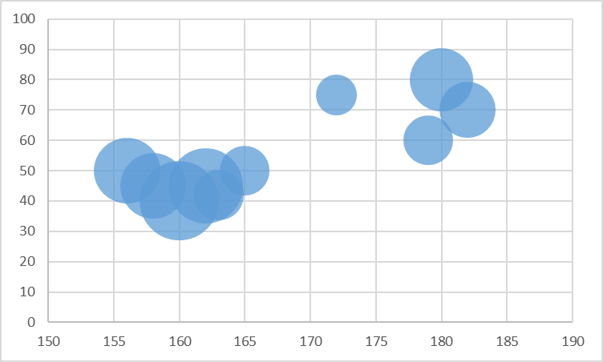
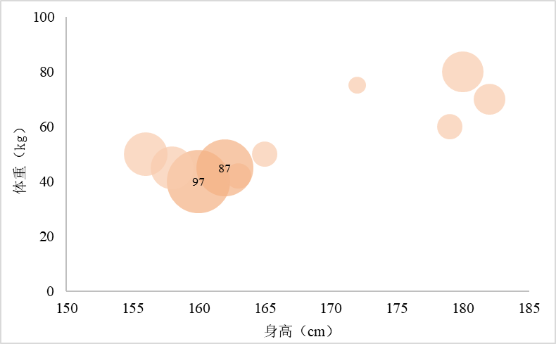
一张图发布前的七项检查
下面的检查单适用于论文、报告和展示材料。它不保证图形一定优秀，但能防止最常见的误读。
| 检查项 | 需要回答的问题 |
|---|---|
| 研究问题 | 这张图回答的是什么问题？能否用一句完整的话说出发现或比较任务？ |
| 数据口径 | 数据来源、时间范围、分析单位、筛选条件、缺失值处理和样本量是否能被追溯？ |
| 编码匹配 | 位置、长度、颜色、面积和形状是否与变量类型和读者任务相匹配？ |
| 尺度诚实 | 轴的起止点、单位、对数变换、双坐标和比例是否清楚且不制造夸张？ |
| 视觉层级 | 最重要的信息是否最醒目？背景、网格、图例和标签是否过多？ |
| 无障碍性 | 不看颜色能否分辨关键类别？颜色、形状、线型和文字标注是否提供冗余线索？ |
| 叙事位置 | 图题、图注和正文是否说明它支持哪一项论断，以及哪些结论不能从图中推出？ |
颜色尤其需要克制。颜色适合表示类别、强调一个对象或表达有序强度，但不应成为唯一的区分线索：色觉差异、黑白打印和投影条件都可能使信息消失。对于类别，可同时使用直接标签、线型、点形或纹理；对于连续强度，应使用明暗或感知上较均匀的单色序列，并在图例中给出数值含义。无障碍并不是额外的美化要求，而是让证据在不同阅读条件下仍可被检查的基本条件。
12.5 工具的选择：先固定分析逻辑，再选择实现方式
Excel：适合快速验证和常规制图
Excel 适合整理数据、快速试画常见图形和完成常规报告图。一个可靠的工作顺序如下：
- 将数据整理为规则表：一行代表一个观察单位，一列代表一个变量，标题唯一且单位明确。
- 先画基础图检查结构，例如条形图、散点图或箱线图；不要一开始就添加配色、动画和装饰。
- 根据研究问题调整排序、轴范围、图题、单位和必要的数据标签。
- 若使用组合图或第二坐标轴，单独核对每个序列的单位、刻度和解释边界。
- 导出前在目标尺寸、黑白打印或投影条件下复核文字是否可读，并将源数据、设置和版本保留在项目文件中。
网络工具：以“导入—选择—配置—导出”的流程工作
网络制图工具通常把制图步骤设计为导入数据、选择图形、配置字段与样式、导出结果。下图左侧的引导页展示了这种四步流程；右侧的编辑界面则显示，模板、字段设置和样式预览可以降低上手门槛。
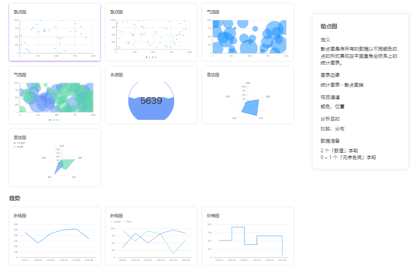
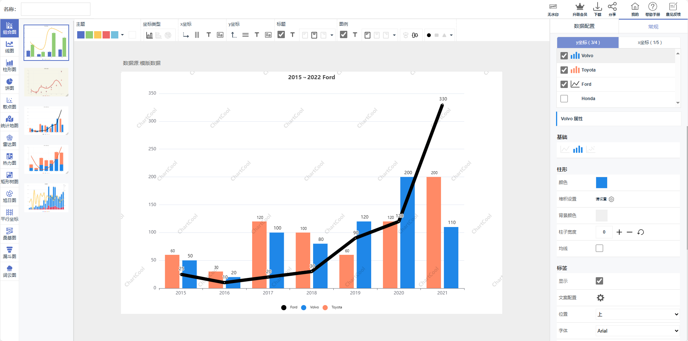
在线服务的界面、价格、可用模板和数据政策会变化，因此不宜把某个具体网站当作永久的软件标准。对于含个人信息、未公开研究数据或受保密协议限制的数据，应优先使用本地工具或经过机构批准的平台；对任何导出图，都应保留数据版本和生成日期，以便复现。
R：把绘图过程写成可复现的代码
R 的基础绘图函数 plot() 可以快速创建散点图、折线图、点线图和柱状图等。type = "p" 表示点，"l" 表示线，"b" 表示点和线；这些参数控制的是呈现方式，不会替代变量选择和图形诊断。
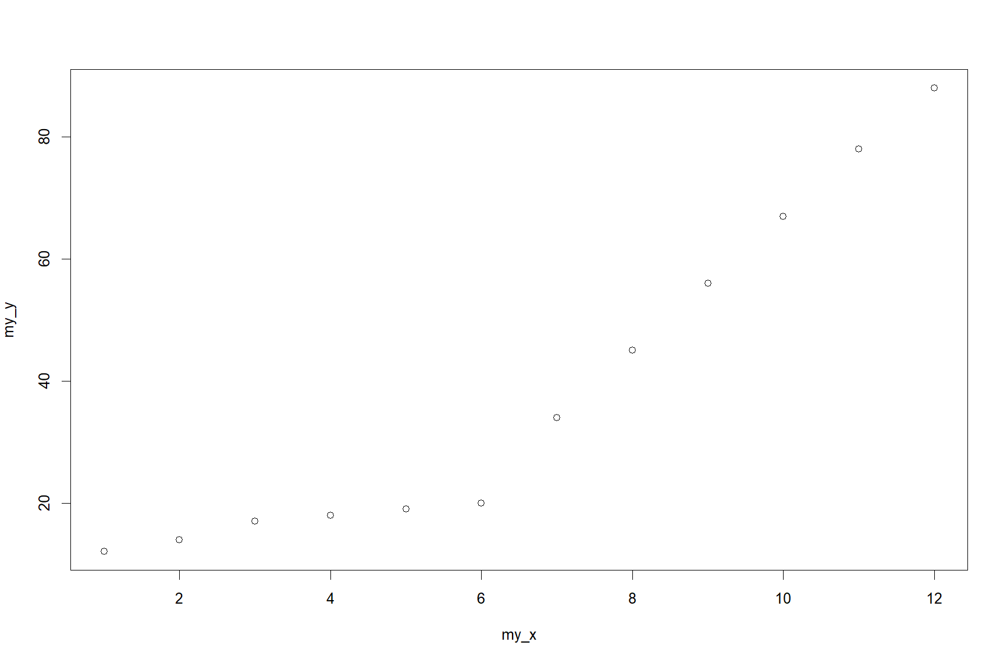
ggplot2 采用“图形语法”的思路：先提供数据，再在 aes() 中声明变量怎样映射到 x、y、颜色、形状或大小，随后添加几何对象，例如 geom_point()、geom_line() 或 geom_boxplot()。这种写法的优势是，数据更新后可以重新运行同一段代码，得到具有一致规则的图形。
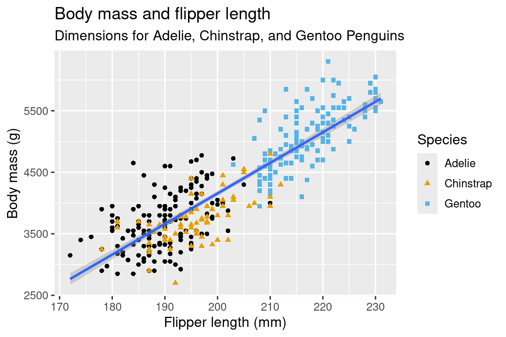
下面的代码演示一个最小的可复现作图结构。代码中应使用实际变量名，并在图题、轴标题和数据处理步骤中保留可追溯信息。
library(ggplot2)
ggplot(dat, aes(x = study_hours, y = score, colour = grade)) +
geom_point(alpha = 0.65, size = 2) +
geom_smooth(method = "lm", se = TRUE, colour = "grey30") +
labs(
title = "学习时长与成绩的关系",
x = "每周学习时长（小时）",
y = "课程成绩（分）",
colour = "年级"
) +
theme_minimal()
这段代码包含四层判断：dat 是经过清洗的数据；aes() 声明变量与视觉通道的对应；geom_point() 呈现个体；geom_smooth() 仅用于概括平均趋势，不能证明因果。若分组之间的关系不同，应考虑分面或加入交互项，而不是只画一条覆盖所有人的直线。
12.6 AI 辅助绘图：把自然语言变成可审计的迭代
AI 可以协助建议图形、解释报错、生成 R 或 Python 的初稿、修改标题和检查配色，但它不知道研究者的数据含义、分析目的和伦理边界。它给出的代码可能使用错误字段、假定不存在的数据格式，或生成视觉上完整却统计上错误的图。因此，AI 最合适的角色是“可对话的草稿助手”，而不是替代研究判断的制图者。
下图的对话先说明数据字段和目标：按高校、年份、学科和排名信息，要求用 R 制作奖项数量随年份变化的动态呈现。随后运行代码时出现字符编码错误。这个过程说明，AI 生成的代码必须在真实环境中执行、读取报错并逐步核对，而不能只停留在聊天窗口的文本输出。
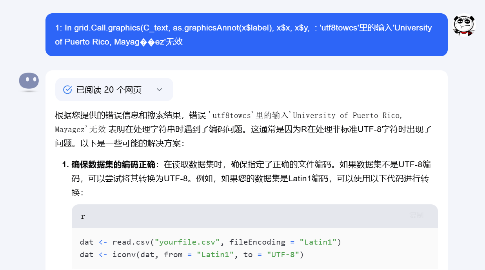
仅仅“能运行”仍不代表图表可用。下图左侧的初稿包含过多高校与图例，标签互相遮挡，读者无法辨认比较对象；右侧通过继续追问“只保留前十所”“以总数排序”“交换坐标含义”等要求，使输出逐步接近一张可读的排序图。这个案例的核心不是某一次提示词，而是把视觉问题准确说出来并逐轮验证。
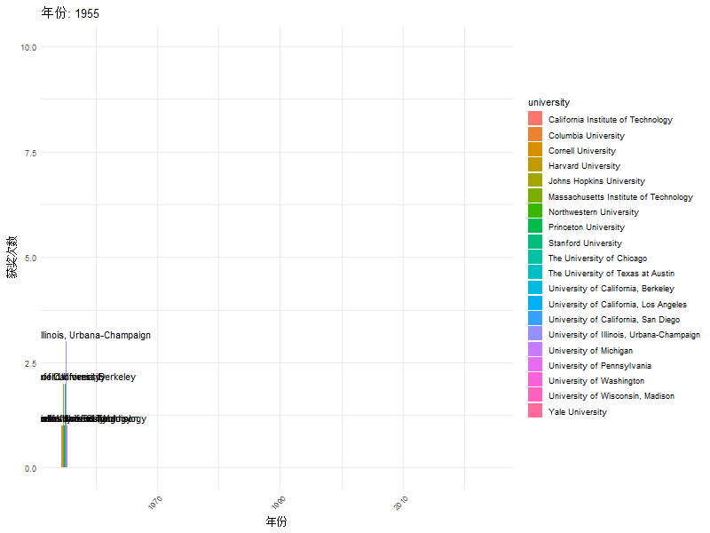
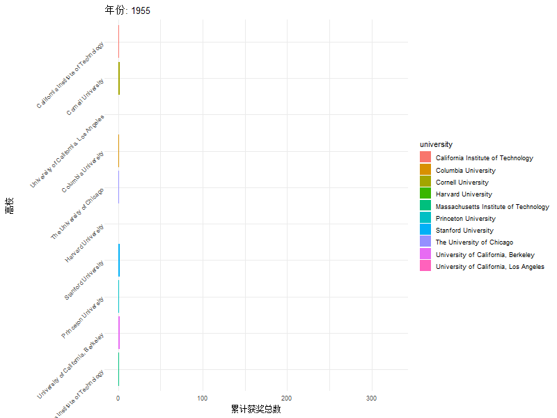
下面的提示结构可以直接改写使用。提示越接近一份小型分析说明，越容易得到可检查的初稿；但所有变量名、筛选条件和计算结果仍应由研究者核对。
| 信息项 | 应说明的内容 | 示例表达 |
|---|---|---|
| 分析目标 | 要让读者比较或发现什么 | “比较不同学校的项目总数，并突出排名前十者” |
| 数据结构 | 一行代表什么，变量名和类型是什么 | “每行是一所学校在某年的一条记录；year 为整数，award 为 0/1” |
| 筛选与计算 | 如何汇总、去重、处理缺失 | “按学校汇总 award 的总和，排除学校名缺失的记录” |
| 图形约束 | 需要何种图、排序、坐标、颜色和标签 | “画横向排序条形图；只保留前十；直接标注总数；其他对象不显示” |
| 输出环境 | 使用的语言、包、版本和文件格式 | “请给出可在 R 4.x 与 ggplot2 中运行的代码，并保存为 PNG” |
| 验证要求 | 需要检查什么 | “代码后列出三项检查：字段存在、汇总数量与原表一致、坐标轴单位正确” |
使用 AI 时还应遵守三条底线。第一，不上传未经授权的个人数据、访谈文本、受保护研究材料或密钥；必要时先在本地脱敏并只提供最小示例。第二，不把 AI 生成的统计解释直接写进结论，必须回到数据、模型和研究设计复核。第三，保留提示词、代码版本、包版本和人工修改记录，使图形在需要时能够被追溯与再现。
12.7 让图表进入研究叙事
一张图的标题不应只是“学生成绩折线图”或“相关散点图”，而应告诉读者它服务于什么问题。例如，“2019—2024 年某领域发文量总体上升，2022 年后增速放缓”比“发文量变化图”更具有信息；前提是图中确实支持这一描述。图注则承担边界说明：数据来自何处、时间范围是什么、样本量是多少、单位和计算口径为何、是否经过筛选或标准化。
在一份完整的研究报告中，图形之间也应有推进关系。一个常见而稳妥的顺序是：
- 用样本结构图交代研究对象和数据质量；
- 用分布图或趋势图描述现象；
- 用分组比较图展示差异；
- 用散点图、回归图或聚类图检查关系和机制；
- 在正文中说明图形支持什么结论、不能支持什么结论，并把更完整的表格或诊断图放在附录。
同一结论若只依赖一张经过复杂修饰的图，证据通常较弱；若描述图、模型结果、诊断图和数据口径彼此吻合，读者就能沿着证据链检查研究者的判断。数据可视化的目标不是让结论显得更强，而是让证据的强弱、范围和不确定性被清楚地看见。
本章小结
数据可视化是数据分析不可分割的一部分。均值、相关和模型系数能提供摘要，但不能替代对原始结构、异常点、分组与非线性的观察；因此，分析前后都应让图形参与判断。选图时先明确研究问题、数据类型和比较任务，再选择条形图、折线图、散点图、箱线图等与任务相配的形式。排序、零基线、尺度、标注、配色和样本量说明决定图表是否诚实、可读和可检查。
Excel、网络工具、R 与 AI 都能加快绘图，但不能替代研究判断。可复现代码、清楚的提示词、对报错和输出的逐步核验，以及对数据安全的保护，才能把工具输出转化为可用于研究报告的证据。每一张准备发布的图都应能回答三个问题：它要回答什么、读者应从中看见什么、它不能支持什么结论。
思考与练习
- 任选一份教育研究数据，为“样本构成”“近五年变化”“学习投入与成绩关系”“不同群体的成绩分布”各选一种图形。分别说明研究问题、变量类型、排序或尺度设置，以及为什么不选另一种常见图形。
- 找一张含有多条折线或多个饼图的公开图表。指出其中至少三项可能增加误读的因素，并将它改成一张突出主要信息的图；在图注中说明你的修改依据。
- 以自己的一份数据为例，用 Excel 或 R 制作一张散点图或箱线图。检查它是否显示了异常值、样本量和分组结构；再写一段不超过 150 字的图题与图注。
- 使用表12-4 的结构向 AI 请求一段绘图代码。运行后至少核对字段名、样本量、汇总值、轴标题、单位和排序六项内容，并记录 AI 代码与人工修改分别做了什么。